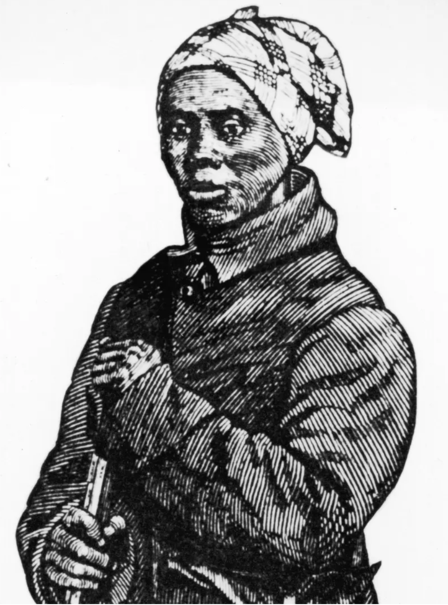
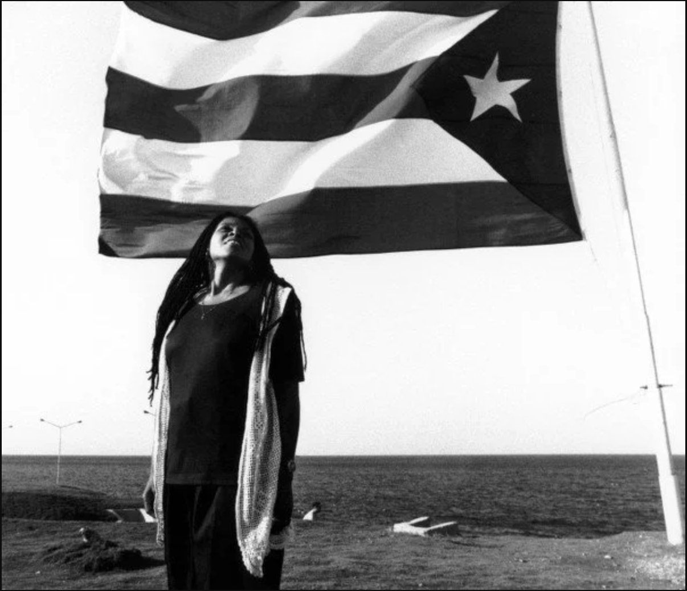

The Problem

A headline from the Washington Post from August 25, 2026
What I hope to accomplish

Initial game screen from River Raider 1863, A 2D Game Prototype
1) Participate and document research on how to make black history more accessible, including the future of it.
2) Develop a game - the type of game and tech stack is to be determined.
What this project will bring to audiences

Character from When Rivers Were Trails, 2019
1) Community folks celebrating Assata or Harriet for Juneteenth or Black History Month
2) Middle/High Schoolers studying Black Histories
Why I'm excited



1) Harriet Tubman Illustration Holding Shot Gun 2) Cover of The Future of Black Studies by Abdul Alkalimat 3) Portrait of Assata Shakur in Cuba
I majored in Black Studies in undergrad and am a full stack engineer professionally. I also worked on games for almost 5 years. This will join some of things I am passionate about and give me the opportunity to have conversations around how tech can continue to shift the accessibility of education.